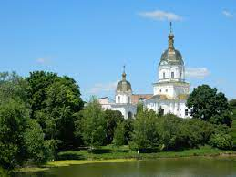

Проєкт 7 чудес України
Полтавська Область
.png)
- 7 Природних чудес
- 7 Історичних міст та містечок
Джерело 7 Чудес України. Кочубеївські дуби
Кочубеївські дуби
 Три з них ростуть рядком, один окремо, ближче до селища Диканька, віком близько 800 років, з діаметром стовбура 1,5-1,8м і висотою 20-22м.
Мальовнича природа оспіваної Пушкіном та Гоголем всесвітньовідомої Диканьки завжди приваблює сюди численних гостей. Славиться наша місцевість заповідними об’єктами та пам’ятками природи, яких налічується тепер одинадцять. Хто не пам’ятає цих рядків О. С. Пушкіна з поеми “Полтава”:
В Диканці вартою стоять
Дуби, розрісшися крислато,
Про друзів, посланих на страту,
Вони нащадкам гомонять…
Мова йдеться про генерального суддю Василя Кочубея та полтавського полковника Івана Іскру, страчених у 1708 році за наказом гетьмана Мазепи. Дуби були свідками цих подій.
За народними переказами біля Кочубеївських дубів Мотря зустрічалась з гетьманом Мазепою. Це досить заплутана історія кохання знатного шановного гетьмана Мазепи та його хрещениці Матрони Василівни Кочубей, двох людей різниця у віці яких сягала 50 років, не зрозумів ніхто. Молода Кочубеївна захоплювалась талантом та розумом хрещеного батька. Після загадкових зустрічей та таємного листування, дівчина вирішила втекти від батька, що був категорично проти таких стосунків. Старий Кочубей ладний на все аби повернути доньку та помститися Мазепі, тому у серпні 1707 року він та Іскра надіслали листа Петру І, в якому повідомили про переговори гетьмана Івана Мазепи зі шведським королем про відрив України від Росії. Петро І не тільки не повірив цьому, а й страшенно розгнівався на Кочубея, тому Кочубей і Іскра були видані царським урядом Мазепі і незабаром страчені. Поховані у Києво-Печерській лаврі.
До середини 30-х років виділявся найбільшими розмірами дуб Марії, або дуб Мазепи, що ріс у вибалку неподалік дзвіниці Миколаївської церкви. Саме з ним пов’язані народні перекази місця зустрічі закоханих. Дані цього дуба є надзвичайними. Кілька разів його палила блискавка. Потім пастухи додумались на вершині обгорілого стовбура пекти картоплю. Рештки обвугленого стовбура діаметром 7-8 м в середині 30-х років спиляли і передали до Полтавського краєзнавчого музею, де він зберігався до початку війни. При відступі німці спалили і пограбували музей, а дуб як цінну сировину вивезли до Німеччини. Та ще й досі дуби нагадують усім про ці страшні події. Існує кілька версій щодо їх появи і їхнього віку.
За народними переказами: садили дуби Кочубей та Іскра, котрі дружили й були свояками, задовго до Полтавської битви у день народження В. Л. Кочубея. А якщо гетьманський універсал на володіння Диканькою Кочубей отримав у 1687 році, то дуби вже можуть сягати за трьохсотлітній рубіж.
Пушкін ніколи не був у Диканці, працював не в документальному, а в літературному жанрі. Уявлення про багатство диканської садиби Кочубеїв міг мати із розповідей правнучки страченого генерального судді Наталки Кочубей, з якою познайомився у Царському селі, де влітку жили Кочубеї. Вона була одним із перших юнацьких захоплень поета і стала праобразом його заміжньої Тетяни Ларіної із поеми “Євгеній Онєгін”. Звичайно дубів Олександр Сергійович не бачив, а все почуте від Наталки у вигляді родових переказів та легенд міг опоетизувати як це зробив з Марією Кочубей, котра ніколи не зустрічалася із Мазепою у Диканці. Це відбувалося у гетьманській столиці Батурині.
Тому і не дивно, що ми не звернулися до неперевершеного майстра документальної хроніки, талановитого письменника й журналіста В. О. Гіляровського, що побував у Диканському краї наприкінці минулого століття і видав книгу “На батьківщині Гоголя”. Він пише: “ Ось при в’їзді в Диканьку – алея із дубів – таких п’ятиобхватних, яких на світі, мабуть, ніде і не побачиш …”значить, вже алеї, а не ряд, як у Пушкіна.
Дійсно, за свідченням старих людей, тоді по обидві сторони росло 8 дубів – велетнів.
І ось зовсім несподівана знахідка. Полтавський краєзнавець В. В. Кішик показав фотокопію карти, знайденої в архіві древніх актів у Москві. На ній прапорщик Мікеєв, складаючи у 1861 році план володінь князя С. В. Кочубея в Диканці зобразив дубову алею із 68 дерев. Але місцями вона переривалася. В різних рядках її росло 7, 19, 42 дуба (до яких входило і три нині уцілілих велетні). Крізь алею простяглася дорога, що повертала від нинішньої автотраси Полтава – Гадяч напроти села Проні і вела через Миколаївський ліс прямо до князівського палацу.
Очевидно, не було смислу тим, хто в сиву давнину прокладав цю дорогу, садити в лісі молоді дубки, коли поруч росло безліч кремезних лісових дубів. Прорубуючи з появою тут першого Кочубея в кін. XVII ст. просіку, чиїсь руки по обидва її боки залишали красені-дуби з інтервалом 25 – 50 м. А їх тут було достатньо, адже як відомо, що місцевість була дикою, звідки й пішла назва Диканьки.
У цьому плані можна пояснити зникнення до кінця XIX ст. зображених на карті 60 дерев з дубової алеї. Надзвичайно багаті Кочубеї дуже пишалися своїм розкішним палацом, віковим парком, архітектурним ансамблем і славетними дубами, що ввійшли в історію. Тому дуже малоймовірно, що їх спиляли, як будівельний матеріал. Значно легше припустити, що дубову алею розчистили, коли переважна більшість дерев уже засохла, струхла, згнила. А це могло статися лише в процесі природного старіння дерев, яким уже і на час вирубки просіки в лісовому масивові було 300 – 500 років. А взагалі вік дубів становить 800 – 1000 літ. Отже цілком вірогідно, що до цього рубежу наближаються вже і чотири Кочубеївські дуби, залишки дерев’яної алеї і ще древнішої дрімучого лісу.
Нині під охороною держави знаходяться 4 дуби. Три з них ростуть рядком, один окремо, ближче до селища Диканька, віком близько 800 років, з діаметром стовбура 1,5-1,8м і висотою 20-22м.
Джерело 7 Чудес України. Диканька
Три з них ростуть рядком, один окремо, ближче до селища Диканька, віком близько 800 років, з діаметром стовбура 1,5-1,8м і висотою 20-22м.
Мальовнича природа оспіваної Пушкіном та Гоголем всесвітньовідомої Диканьки завжди приваблює сюди численних гостей. Славиться наша місцевість заповідними об’єктами та пам’ятками природи, яких налічується тепер одинадцять. Хто не пам’ятає цих рядків О. С. Пушкіна з поеми “Полтава”:
В Диканці вартою стоять
Дуби, розрісшися крислато,
Про друзів, посланих на страту,
Вони нащадкам гомонять…
Мова йдеться про генерального суддю Василя Кочубея та полтавського полковника Івана Іскру, страчених у 1708 році за наказом гетьмана Мазепи. Дуби були свідками цих подій.
За народними переказами біля Кочубеївських дубів Мотря зустрічалась з гетьманом Мазепою. Це досить заплутана історія кохання знатного шановного гетьмана Мазепи та його хрещениці Матрони Василівни Кочубей, двох людей різниця у віці яких сягала 50 років, не зрозумів ніхто. Молода Кочубеївна захоплювалась талантом та розумом хрещеного батька. Після загадкових зустрічей та таємного листування, дівчина вирішила втекти від батька, що був категорично проти таких стосунків. Старий Кочубей ладний на все аби повернути доньку та помститися Мазепі, тому у серпні 1707 року він та Іскра надіслали листа Петру І, в якому повідомили про переговори гетьмана Івана Мазепи зі шведським королем про відрив України від Росії. Петро І не тільки не повірив цьому, а й страшенно розгнівався на Кочубея, тому Кочубей і Іскра були видані царським урядом Мазепі і незабаром страчені. Поховані у Києво-Печерській лаврі.
До середини 30-х років виділявся найбільшими розмірами дуб Марії, або дуб Мазепи, що ріс у вибалку неподалік дзвіниці Миколаївської церкви. Саме з ним пов’язані народні перекази місця зустрічі закоханих. Дані цього дуба є надзвичайними. Кілька разів його палила блискавка. Потім пастухи додумались на вершині обгорілого стовбура пекти картоплю. Рештки обвугленого стовбура діаметром 7-8 м в середині 30-х років спиляли і передали до Полтавського краєзнавчого музею, де він зберігався до початку війни. При відступі німці спалили і пограбували музей, а дуб як цінну сировину вивезли до Німеччини. Та ще й досі дуби нагадують усім про ці страшні події. Існує кілька версій щодо їх появи і їхнього віку.
За народними переказами: садили дуби Кочубей та Іскра, котрі дружили й були свояками, задовго до Полтавської битви у день народження В. Л. Кочубея. А якщо гетьманський універсал на володіння Диканькою Кочубей отримав у 1687 році, то дуби вже можуть сягати за трьохсотлітній рубіж.
Пушкін ніколи не був у Диканці, працював не в документальному, а в літературному жанрі. Уявлення про багатство диканської садиби Кочубеїв міг мати із розповідей правнучки страченого генерального судді Наталки Кочубей, з якою познайомився у Царському селі, де влітку жили Кочубеї. Вона була одним із перших юнацьких захоплень поета і стала праобразом його заміжньої Тетяни Ларіної із поеми “Євгеній Онєгін”. Звичайно дубів Олександр Сергійович не бачив, а все почуте від Наталки у вигляді родових переказів та легенд міг опоетизувати як це зробив з Марією Кочубей, котра ніколи не зустрічалася із Мазепою у Диканці. Це відбувалося у гетьманській столиці Батурині.
Тому і не дивно, що ми не звернулися до неперевершеного майстра документальної хроніки, талановитого письменника й журналіста В. О. Гіляровського, що побував у Диканському краї наприкінці минулого століття і видав книгу “На батьківщині Гоголя”. Він пише: “ Ось при в’їзді в Диканьку – алея із дубів – таких п’ятиобхватних, яких на світі, мабуть, ніде і не побачиш …”значить, вже алеї, а не ряд, як у Пушкіна.
Дійсно, за свідченням старих людей, тоді по обидві сторони росло 8 дубів – велетнів.
І ось зовсім несподівана знахідка. Полтавський краєзнавець В. В. Кішик показав фотокопію карти, знайденої в архіві древніх актів у Москві. На ній прапорщик Мікеєв, складаючи у 1861 році план володінь князя С. В. Кочубея в Диканці зобразив дубову алею із 68 дерев. Але місцями вона переривалася. В різних рядках її росло 7, 19, 42 дуба (до яких входило і три нині уцілілих велетні). Крізь алею простяглася дорога, що повертала від нинішньої автотраси Полтава – Гадяч напроти села Проні і вела через Миколаївський ліс прямо до князівського палацу.
Очевидно, не було смислу тим, хто в сиву давнину прокладав цю дорогу, садити в лісі молоді дубки, коли поруч росло безліч кремезних лісових дубів. Прорубуючи з появою тут першого Кочубея в кін. XVII ст. просіку, чиїсь руки по обидва її боки залишали красені-дуби з інтервалом 25 – 50 м. А їх тут було достатньо, адже як відомо, що місцевість була дикою, звідки й пішла назва Диканьки.
У цьому плані можна пояснити зникнення до кінця XIX ст. зображених на карті 60 дерев з дубової алеї. Надзвичайно багаті Кочубеї дуже пишалися своїм розкішним палацом, віковим парком, архітектурним ансамблем і славетними дубами, що ввійшли в історію. Тому дуже малоймовірно, що їх спиляли, як будівельний матеріал. Значно легше припустити, що дубову алею розчистили, коли переважна більшість дерев уже засохла, струхла, згнила. А це могло статися лише в процесі природного старіння дерев, яким уже і на час вирубки просіки в лісовому масивові було 300 – 500 років. А взагалі вік дубів становить 800 – 1000 літ. Отже цілком вірогідно, що до цього рубежу наближаються вже і чотири Кочубеївські дуби, залишки дерев’яної алеї і ще древнішої дрімучого лісу.
Нині під охороною держави знаходяться 4 дуби. Три з них ростуть рядком, один окремо, ближче до селища Диканька, віком близько 800 років, з діаметром стовбура 1,5-1,8м і висотою 20-22м.
Джерело 7 Чудес України. Диканька
Диканька
Диканька – селище міського типу, районний центр, розташований на правобережжі річки Ворскли за 30 км на північ від Полтави.
Походження назви селища пов’язують з тією обставиною, що раніше Диканька була оточена густими лісами, віковими дубами, які надавали цій місцевості дикого вигляду. Існують також твердження, що ця назва походить від прізвища першого поселенця – Диканя.
На території сучасної Диканьки виявлені сліди 3-х поселень ранніх скіфських часів.
У лісовій хащі під Диканькою до 1602 року існував печерний скит, залишки якого збереглися донині. Це було ціле підземне містечко з 8 печер, з’єднаних розгалуженими ходами з системою життєзабезпечення.
Вперше в письмових джерелах Диканька згадується в 1658 році, коли поблизу неї стався бій між загонами полтавського полковника Мартина Пушкаря і військами гетьмана Івана Виговського.
Через десять років на тому ж полі відбулась ще одна битва, тепер між гетьманами Петром Дорошенком та Іваном Брюховецьким (до речі, він народився неподалік від Диканьки близько 1623 року).
Від 1660 Диканька входила до складу Будиської (Будянської, Великобудищанської) сотні Полтавського полку Гетьманщини.
1687 за універсалом гетьмана Івана Самойловича передана у власність генеральному писареві Василю Кочубею. За його життя в Диканьці жив і працював літописець Самійло Величко.
У XVIII ст. в Диканьці було кілька броварень, великі пасіки, що належали козацькій старшині та духовенству. Кочубеї були власниками селітряних заводів, що виробляли порох для армії. Від 1775 — у складі Полтавського повіту Новоросійської губернії, від 1802 — Полтавської губернії Російської імперії.
У 1817р. до Диканьки приїздив цар Олександр І, і на честь його перебування 1820р. споруджено Тріумфальну арку.
1838 року до Диканьки приїздив М. Глінка, що у той час набирав на Полтавцині співаків для Петербурзької придворної співацької капели.
До 1917 р. Диканькою володіли нащадки Кочубеїв. Композиційним центром поселення була садиба Кочубеїв: ансамбль мав палац, побудований наприкінці 18 століття за проектом італійського архітектора Джакомо Кваренгі, тріумфальну арку, муровану церкву. Частина колись дуже пишної садиби Кочубеїв збереглася й донині.
У січні 1918 р. у Диканьці проголошено радянську владу. Палац Кочубеїв взимку 1919 року було пограбовано, спалено, а пізніше — зруйновано і розібрано.Експонати картинної галереї, бібліотеку та архів було вивезено.
Жителі Диканьки постраждали від голоду навесні 1921 року. В той же час комуністична влада організувала у Диканьці збір коштів і продуктів для голодуючих Поволжя: лише за кілька днів вересня було зібрано 60 тис. карбованців та від Диканського комітету незаможних селян 4 пуди круп і 53 пуди зерна.
Від 7 березня 1923 Диканька стала центром району у складі Полтавської округи, від 1932 – район у складі Харківської області, від 1937 р. — Полтавської області УРСР. З 1957р. Диканька – селище міського типу.